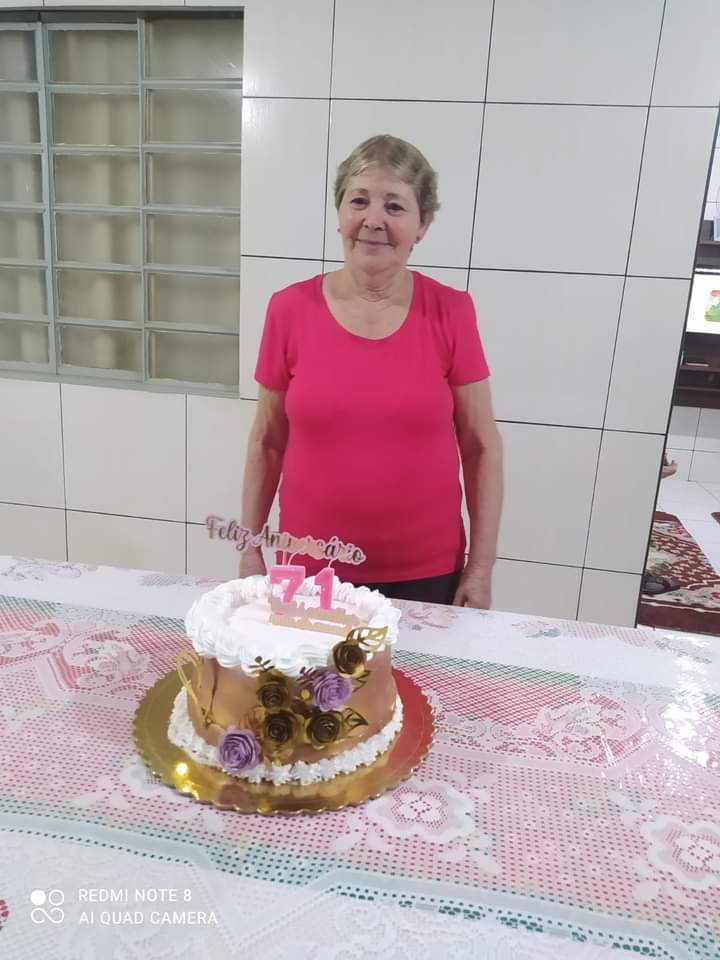
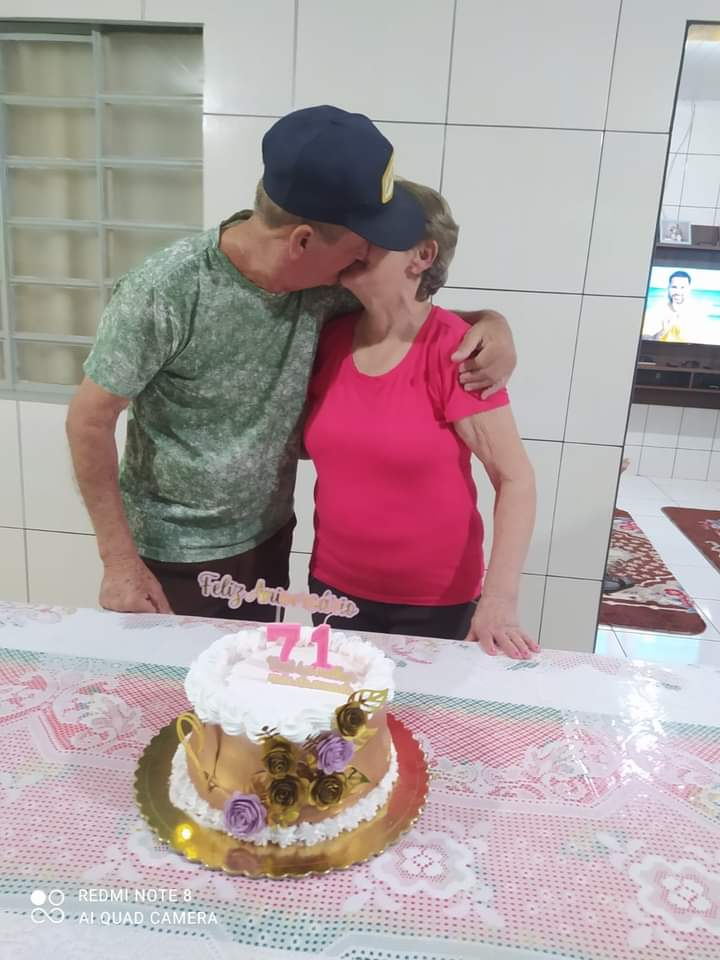
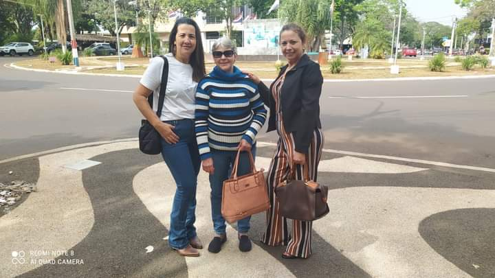

Minha história começa quando conheci o meu marido, eu residia na área rural, lá nós cuidávamos do bicho-da-seda e sempre carreguei comigo a paixão pelo mundo da moda, aprendi a costurar aos 13 anos e apartir disso não consegui mais parar, era uma terapia pra mim. Porém por motivos do matrimônio tivemos que nos locomover para a zona urbana, pois nâo tÍnhamos condições de viver no sítio, e na cidade já teria uma grande oportunidade de emprego. Fomos procurar moradia, porém não conseguimos de imediato e tivemos que morar por um período na casa da minha sogra, e com isso meu marido já havia encontrado um emprego e eu ainda continuava em casa, porém trabalhando como costureira por conta própria para ajudar nos sustentos de casa, utilizando algo que eu gostava de fazer como meio de ganhar um ganho extra, já que nâo tinha conseguido encontrar um emprego para mim. Com o tempo tive o meu primeiro filho, mas infelizmente eu perdi o segundo, após 4 longos anos tive o meu terceiro filho, e com isso seguimos as nossas vidas da mesma maneira, meu marido como agricultor e eu como costureira dentro de casa. E até a atualidade, meus filhos seguem nossos exemplos de coragem para enfrentar a mudança que está ao longo da vida, utilizando das ferramentas do campo para o seu próprio sustento da família.
  